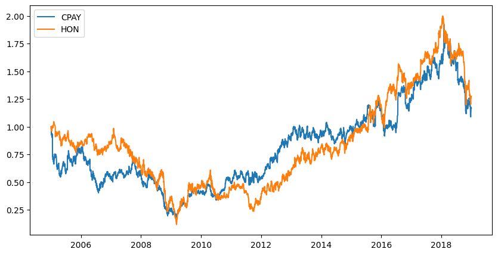
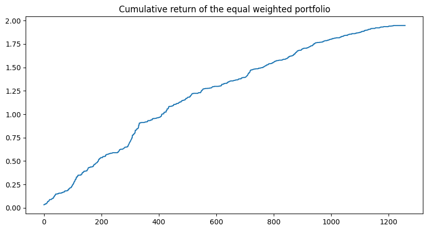

Table of Contents
Strategy Details
This strategy implements pairs trading based on the mean-reverting property of the spread between two stocks. The approach involves identifying cointegrated pairs of stocks and trading based on the statistical deviation of their price spread from its historical mean.
Strategy Components
-
Pair Selection:
- Identifies cointegrated pairs using Euclidean distance method
- Alternative methods include Engle-Granger, PCA, and clustering
-
Trading Signals:
- Calculates spread between paired stocks
- Computes z-score of the spread
- Generates signals based on z-score thresholds
-
Position Management:
- Long position when z-score is below threshold
- Short position when z-score is above threshold
- Exit positions when z-score approaches zero
Let's begin by collecting and processing the necessary data:
Data Collection
The following code collects S&P 500 company data and prepares it for analysis:
# Collect the list of the S&P 500 companies from Wikipedia and save it to a file
import os
import requests
import pandas as pd
# Get the list of S&P 500 companies from Wikipedia
url = 'https://en.wikipedia.org/wiki/List_of_S%26P_500_companies'
response = requests.get(url)
html = response.content
df = pd.read_html(html, header=0)[0]
tickers = df['Symbol'].tolist()
# tickers.append('^GSPC')
Data Loading
The following code implements data loading from Yahoo Finance with proper error handling and data normalization:
# Load the data from yahoo finance
import yfinance as yf
def load_data(symbol):
direc = 'data/'
os.makedirs(direc, exist_ok=True)
file_name = os.path.join(direc, symbol + '.csv')
if not os.path.exists(file_name):
ticker = yf.Ticker(symbol)
df = ticker.history(start='2005-01-01', end='2023-12-31')
df.to_csv(file_name)
df = pd.read_csv(file_name, index_col=0)
df.index = pd.to_datetime(df.index, utc=True).tz_convert('US/Eastern')
df['date'] = df.index
if len(df) == 0:
os.remove(file_name)
return None
return df
holder = []
ticker_with_data = []
for symbol in tickers:
df = load_data(symbol)
if df is not None:
holder.append(df)
ticker_with_data.append(symbol)
tickers = ticker_with_data[:]
print(f'Loaded data for {len(tickers)} companies')
Data Normalization
The following code normalizes the price data to facilitate pair comparison:
# Keep the "close" and "open" column only
holder = [df[['Close', 'Open']] for df in holder]
# Divide all the prices by the first close price to normalize the data
normalized_holder = []
for i in range(len(holder)):
df = holder[i].copy()
normalizer = df['Close'].iloc[0]
df['Close'] /= normalizer
df['Open'] /= normalizer
normalized_holder.append(df)
# Show the head of the first dataframe
normalized_holder[0].head()
Data Filtering
The following code ensures we only work with stocks that have complete data for the analysis period:
# Keep stocks that have data for the whole period
normalized_holder = [df for df in normalized_holder if len(df) == len(normalized_holder[0])]
tickers = [ticker for df, ticker in zip(normalized_holder, tickers)]
# Show the number of stocks that have data for the whole period
print(f'Number of stocks that have data for the whole period: {len(tickers)}')
Implementation of Pairs Trading Strategy
In this section, we implement the pairs trading strategy using the normalized price data. We'll split the data into training and testing periods, identify cointegrated pairs, and evaluate the strategy's performance.
Data Splitting
We split our data into training (2005-2019) and testing (2019-2023) periods. This allows us to identify pairs during the training period and evaluate their performance in the testing period.
# Split the data into training and testing sets for each stock
training_data = [df[df.index.year < 2019] for df in normalized_holder]
testing_data = [df[df.index.year >= 2019] for df in normalized_holder]
# Show the rows of the first training dataframe and the first testing dataframe
training_data[0].shape, testing_data[0].shape
Pair Selection
We calculate the Euclidean distance between each pair of stocks to identify the most similar pairs. This helps us find stocks that move together, which is crucial for pairs trading.
# Calculate the Euclidean distance between each pair of stocks, add a progress bar
distance_matrix = np.zeros((len(tickers), len(tickers)))
for i, j in itertools.product(range(len(tickers)), repeat=2):
distance_matrix[i, j] = np.sqrt(np.sum((training_data[i]['Close'] - training_data[j]['Close']) ** 2))
# Progress bar
print(f'\r{i + 1}/{len(tickers)}', end='')
# Find the top 50 pairs of stocks with the smallest distance, excluding pairs of the same stock and distance 0
top_pairs = []
for i in range(len(tickers)):
for j in range(i + 1, len(tickers)):
if i != j and distance_matrix[i, j] != 0:
top_pairs.append((tickers[i], tickers[j], distance_matrix[i, j]))
top_pairs = sorted(top_pairs, key=lambda x: x[2])[:50]
Visualizing Selected Pairs
Let's visualize the price movements of one of our selected pairs to understand their relationship.
# Plot the close prices of the first pair of stocks
i, j, _ = top_pairs[40]
i = tickers.index(i)
j = tickers.index(j)
plt.figure(figsize=(10, 5))
plt.plot(training_data[i]['Close'], label=tickers[i])
plt.plot(training_data[j]['Close'], label=tickers[j])
plt.legend()
plt.show()

Spread Calculation and Signal Generation
We calculate the spread between each pair and generate trading signals based on statistical deviations from the mean.
# For each pair of stocks, calculate spread = stock1 - stock2
spread = [testing_data[tickers.index(i)]["Close"] - testing_data[tickers.index(j)]["Close"] for i, j, _ in top_pairs]
# Find the spread for the training data
spread_training = [training_data[tickers.index(i)]["Close"] - training_data[tickers.index(j)]["Close"] for i, j, _ in top_pairs]
# Find the standard deviation of the spread for each pair of stocks
std_spread = [np.std(s) for s in spread_training]
# Generate the signals for each pair based on if the absolute value of spread is greater than 2 standard deviation
signals = [np.where(s > 2 * std, 1, np.where(s < -2 * std, -1, 0)) for s, std in zip(spread, std_spread)]
Strategy Returns Calculation
We implement the pairs trading strategy by calculating returns based on the generated signals. The strategy goes long-short when the spread deviates significantly from its mean.
# For each pair, calculate the daily return of the strategy
returns = []
for i, j, _ in top_pairs:
signal = signals[top_pairs.index((i, j, _))]
i_index = tickers.index(i)
j_index = tickers.index(j)
returns.append([])
for k in range(len(signal)):
return_ = 0
# If the signal is 1 and the previous signal is not 1, then short the first stock and long the second stock
if signal[k] == 1 and (k == 0 or signal[k - 1] != 1):
# Exit the position when the spread is less than or equal to 0
exit = k + np.argmax(spread[top_pairs.index((i, j, _))][k:] <= 0)
# Calculate the return of the trade, open at next day open price and close at exit day close price
# Handle the case when the exit is the last day of the data
if exit == len(spread[top_pairs.index((i, j, _))]) - 1:
return_ = (testing_data[j_index]['Close'].iloc[-1] / testing_data[j_index]['Open'].iloc[k+1] - 1) - (testing_data[i_index]['Close'].iloc[-1] / testing_data[i_index]['Open'].iloc[k+1] - 1)
else:
return_ = (testing_data[j_index]['Close'].iloc[exit+1] / testing_data[j_index]['Open'].iloc[k+1] - 1) - (testing_data[i_index]['Close'].iloc[exit+1] / testing_data[i_index]['Open'].iloc[k+1] - 1)
# Change the type of return_ to float
return_ = float(return_)
print(f'{i} {j} {k} {exit} {return_}')
# If the signal is -1 and the previous signal is not -1, then long the first stock and short the second stock
elif signal[k] == -1 and (k == 0 or signal[k - 1] != -1):
# Exit the position when the spread is greater than or equal to 0
exit = k + np.argmax(spread[top_pairs.index((i, j, _))][k:] >= 0)
# Calculate the return of the trade, open at next day open price and close at exit day close price
# Handle the case when the exit is the last day of the data
if exit == len(spread[top_pairs.index((i, j, _))]) - 1:
return_ = (testing_data[i_index]['Close'].iloc[-1] / testing_data[i_index]['Open'].iloc[k] - 1) - (testing_data[j_index]['Close'].iloc[-1] / testing_data[j_index]['Open'].iloc[k] - 1)
else:
return_ = (testing_data[i_index]['Close'].iloc[exit+1] / testing_data[i_index]['Open'].iloc[k+1] - 1) - (testing_data[j_index]['Close'].iloc[exit+1] / testing_data[j_index]['Open'].iloc[k+1] - 1)
# Change the type of return_ to float
return_ = float(return_)
print(f'{i} {j} {k} {exit} {return_}')
returns[-1].append(return_)
print(f'\r{top_pairs.index((i, j, _)) + 1}/{len(top_pairs)}', end='')
Performance Analysis
We analyze the strategy's performance by calculating cumulative returns and Sharpe ratios for each pair and the overall portfolio.
# Calculate the cumulative return of the strategy for each pair using cumsum
cumulative_returns = [np.cumsum(r) for r in returns]
# Calculate the sharpe ratio of the strategy for each pair excluding pairs that have a cumulative return of 0
sharpe_ratios = [np.mean(r) / np.std(r) * np.sqrt(252) for r in returns if np.std(r) != 0]
# Show the sharpe ratios with the corresponding pairs
sharpe_ratios_pairs = [(i, j, r) for (i, j, _), r in zip(top_pairs, sharpe_ratios)]
# Sort the pairs by sharpe ratio
sharpe_ratios_pairs = sorted(sharpe_ratios_pairs, key=lambda x: x[2], reverse=True)
Portfolio Performance
Finally, we evaluate the performance of an equal-weighted portfolio of all pairs.
# Calculate the sharpe ratio of a equal weighted portfolio
cumulative_returns_portfolio = np.sum(cumulative_returns, axis=0)/50
sharpe_ratio_portfolio = np.mean(cumulative_returns_portfolio) / np.std(cumulative_returns_portfolio) /np.sqrt(5)
# Draw the cumulative return of the equal weighted portfolio
plt.figure(figsize=(10, 5))
plt.plot(cumulative_returns_portfolio)
plt.title('Cumulative return of the equal weighted portfolio')
plt.show()
print(f'Sharpe ratio of the equal weighted portfolio: {sharpe_ratio_portfolio}')

Comments
This is a simple implementation of the pairs trading strategy. There are many ways to improve the strategy. For example, we can use machine learning models to predict the spread between the two stocks. We can also use more sophisticated methods to find the pairs of stocks that are cointegrated. But the results of this simple implementation are already promising.
Engle-Granger Implementation
Here is another implementation of the pairs trading strategy using the two-step Engle-Granger method. For this implementation, I did not explicitly separate the training and testing data. I used the entire data to find the cointegrated pairs and then implemented the pairs trading strategy.
def find_cointegrated_pairs(data):
n = len(data)
score_matrix = np.zeros((n, n))
pvalue_matrix = np.ones((n, n))
keys = range(n)
pairs = list(itertools.combinations(keys, 2))
for i, j in pairs:
print(f'Finding cointegration for {tickers[i]} and {tickers[j]}')
try:
result = coint(data[i]['Close'], data[j]['Close'])
except:
print(f'Error in cointegration test for {tickers[i]} and {tickers[j]}')
continue
else:
score = result[0]
pvalue = result[1]
score_matrix[i, j] = score
pvalue_matrix[i, j] = pvalue
return score_matrix, pvalue_matrix
Code Explanation
This code section handles data persistence:
-
Data Management:
- Saves cointegration test results to files
- Loads previously computed results
- Optimizes computation time by avoiding recalculation
# Do not run this cell, load the data directly
score_matrix, pvalue_matrix = find_cointegrated_pairs(holder)
# Save the score and pvalue matrix
np.save('score_matrix.npy', score_matrix)
np.save('pvalue_matrix.npy', pvalue_matrix)
# Read the score and pvalue matrix
score_matrix = np.load('score_matrix.npy')
pvalue_matrix = np.load('pvalue_matrix.npy')
pairs = []
for i in range(len(tickers)):
for j in range(i+1, len(tickers)):
if pvalue_matrix[i, j] < 0.05:
pairs.append((tickers[i], tickers[j]))
print(f'Found {len(pairs)} cointegrated pairs')
# Print the top 100 cointegrated pairs with the lowest p-values
pairs.sort(key=lambda x: pvalue_matrix[tickers.index(x[0]), tickers.index(x[1])])
for pair in pairs[:100]:
print(pair, pvalue_matrix[tickers.index(pair[0]), tickers.index(pair[1])])
# Load the data for the top 100 cointegrated pairs
top_pairs = pairs[:100]
top_pairs_data = []
for pair in top_pairs:
top_pairs_data.append((load_data(pair[0]), load_data(pair[1])))
print(f'Loaded data for {pair[0]} and {pair[1]}')
# For each df in the top_pairs_data, devide the close price by the first close price
for i, (df1, df2) in enumerate(top_pairs_data):
top_pairs_data[i] = (df1['Close'] / df1['Close'].iloc[0], df2['Close'] / df2['Close'].iloc[0])
# Show the top_pairs_data[0]
print(top_pairs_data[0])
Code Explanation
This code section calculates spread metrics:
-
Spread Analysis:
- Computes price spreads between pairs
- Calculates standard deviation of spreads
- Generates trading signals based on spread thresholds
# For each pair in the top_pairs_data, calculate the spread
spread_data = []
for df1, df2 in top_pairs_data:
spread_data.append(df1 - df2)
# Show the spread_data[0]
print(spread_data[0])
# Calculate the standard deviation of the spread for each pair
std_spread = []
for spread in spread_data:
std_spread.append(np.std(spread))
# Show the std_spread[0]
print(std_spread[0])
# Generate the signals for each pair based on if the absolute value of spread is greater than 2 standard deviation
# If the spread is greater than 2 standard deviation, the signal is 1
# If the spread is less than -2 standard deviation, the signal is -1
# Otherwise, the signal is 0
signals = []
for spread, std in zip(spread_data, std_spread):
signals.append(np.where(spread > 2 * std, 1, np.where(spread < -2 * std, -1, 0)))
# Show the signals[0]
print(signals[0])
Code Explanation
This code section implements the trading strategy:
-
Return Calculation:
- Computes daily returns for each pair
- Implements position entry and exit logic
- Calculates strategy returns based on signals
# Calculate the daily return for each pair using close price
daily_return = [None] * len(top_pairs_data)
for i, (df1, df2) in enumerate(top_pairs_data):
daily_return[i] = ((df1/df1.shift(1) - 1) , (df2/df2.shift(1) - 1))
# Show the daily_return[0]
print(daily_return[0])
# For each pair, calculate the daily return of the strategy
# If the signal is 1, then short the first stock and long the second stock, hold the position until the spread is 0, then calculate the return for this trade
# If the signal is -1, then long the first stock and short the second stock, hold the position until the spread is 0, then calculate the return foer this trade
# If the signal is 0, then do nothing
daily_return_strategy = []
for i, (df1, df2) in enumerate(top_pairs_data):
signal = signals[i]
spread = spread_data[i]
daily_return_strategy.append([0] * len(df1))
for j in range(1, len(df1)):
# If the signal is 1 and the previous signal is not 1, then short the first stock and long the second stock
if signal[j] == 1 and signal[j-1] != 1:
# Exit the position when the spread is less than or equal to 0
k = j
while k < len(df1) and spread[k] > 0:
k += 1
if k < len(df1):
daily_return_strategy[i][j] = (df2[k+1]/df2[j+1] - 1) - (df1[k+1]/df1[j+1] - 1)
# If the signal is -1 and the previous signal is not -1, then long the first stock and short the second stock
elif signal[j] == -1 and signal[j-1] != -1:
# Exit the position when the spread is greater than or equal to 0
k = j
while k < len(df1) and spread[k] < 0:
k += 1
if k < len(df1):
daily_return_strategy[i][j] = (df1[k+1]/df1[j+1] - 1) - (df2[k+1]/df2[j+1] - 1)
# Show the daily_return_strategy[0]
print(daily_return_strategy[0])
Code Explanation
This code section analyzes strategy performance:
-
Performance Metrics:
- Calculates cumulative returns for each pair
- Computes Sharpe ratios for profitable pairs
- Evaluates portfolio performance
# Calculate the cumulative return for each pair using cumsum
cumulative_return = []
for daily_return_strat in daily_return_strategy:
cumulative_return.append(np.cumsum(daily_return_strat))
# Show the cumulative_return[0]
print(cumulative_return[0])
# Check the non zero cumulative return
for i, cum_return in enumerate(cumulative_return):
if cum_return[-1] != 0:
print(f'{top_pairs[i]}: {cum_return[-1]}')
# calculate the sharpe ratio for each pair with non zero cumulative return
sharpe_ratio = []
for i, cum_return in enumerate(cumulative_return):
if cum_return[-1] != 0:
sharpe_ratio.append(np.mean(daily_return_strategy[i]) / np.std(daily_return_strategy[i]) * np.sqrt(252))
# Show the sharpe_ratio
for i, ratio in enumerate(sharpe_ratio):
print(f'{top_pairs[i]}: {ratio}')
# Calculate the sharpe ratio of a equal weighted portfolio
cumulative_returns_array = np.zeros(len(cumulative_return))
for i, cum_return in enumerate(cumulative_return):
cumulative_returns_array[i] = cum_return[-1]
# drop the pairs that have zero cumulative return
cumulative_returns_array = cumulative_returns_array[cumulative_returns_array != 0]
print(cumulative_returns_array)
cumulative_returns_portfolio = np.sum(cumulative_returns_array, axis=0)/len(cumulative_returns_array)
sharpe_ratio_portfolio = np.mean(cumulative_returns_array) / np.std(cumulative_returns_array)
print(f'Sharpe ratio of the equal weighted portfolio: {sharpe_ratio_portfolio}')
Conclusion and Future Work
Through our implementation of both the distance method and Engle-Granger method, we have demonstrated that pairs trading remains a profitable strategy even after many years. While the distance method offers simplicity with its fixed 1:1 long-short ratio, the Engle-Granger method provides more flexibility in position sizing.
Key Findings
-
Strategy Performance:
- Both methods demonstrate consistent profitability
- Results show similar performance despite different approaches
- Strategy maintains effectiveness in current market conditions
-
Method Comparison:
- Distance method: Simpler implementation with fixed ratios
- Engle-Granger method: More flexible position sizing
- Both approaches show comparable results
Future Work
Several promising areas for further research and improvement:
-
Strategy Enhancement:
- Adjust long-short ratios in Engle-Granger method
- Optimize position sizing for better risk-adjusted returns
- Implement dynamic threshold adjustments
-
Portfolio Expansion:
- Develop "Generalized pairs-trading" approach
- Trade groups of stocks against other groups
- Create statistical arbitrage book with multiple pair trades
-
Risk Management:
- Implement portfolio-level risk controls
- Develop dynamic position sizing based on volatility
- Add correlation-based position limits